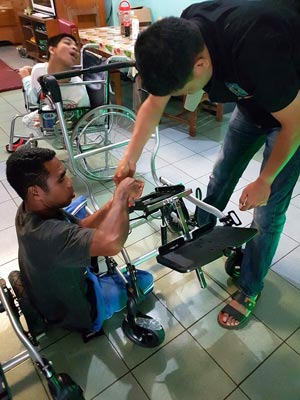
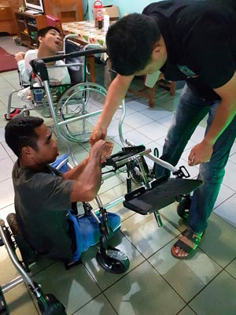

Yamaru Indonesië probeert op allerlei manieren geld te werven en onafhankelijk te zijn.
Met steun uit Nederland heeft Yamaru Indonesië een kippenfarm gebouwd. Deze voor Indonesië hypermoderne farm zorgt zowel voor inkomsten voor Yamaru als voor werkgelegenheid in de omgeving. De farm is al in gebruik genomen en zal op termijn los van steun uit Nederland zelfstandig kunnen functioneren.
Inmiddels is de derde kippenschuur gerealiseerd. De verkoop van zowel eieren als kippen verloopt voorspoedig.


Door een steeds groter wordende groep en een verschil in leeftijd tussen de bewoners van Sayap Kasih is er een behoefte aan een nieuw tehuis (Sayap Kasih 2). De stichting Viae Vitae zal deze uitbreiding realiseren. Yamaru Nederland zorgt voor de inrichting van het nieuwe huis. Het huis wordt gebouwd naast het huidige Sayap Kasih. De kinderen en de zorgverleners blijven een gemeenschap.
 



Door de opbrengst van de kerstactie van Yamaru Nederland zijn er nieuwe rolstoelen en tilliften aangeschaft. De kinderen kunnen weer comfortabel zitten.Om dit zo comfortabel mogelijk te maken, is gevraagd om rolstoelen die per kind af te stellen zijn.
De techniek die hiervoor in Nederland beschikbaar is, wordt nog niet in Indonesië toegepast.
Door de vele giften hebben we in 2015 mooie verstelbare rolstoelen naar Indonesië kunnen sturen, evenals 3 tilliften.
Bij de aanschaf van de rolstoelen en tilliften is rekening gehouden met de extra vraag die ontstaat als Sayap Kasih Paslaten gereed is. De container is 19 januari 2015 verscheept naar Jakarta/Bitung, op 5 november 2016 kwam dan eindelijk, na een moeizame weg van langzaam draaiende ambtelijke molens, de truck met de containers bij Sayap Kasih en kon gelost geworden.
Bij de aanschaf van de rolstoelen in Nederland is aan Michelle Borsboom uitgebreid verteld wat er allemaal verstelbaar is en hoe je dat moet doen. Michelle Borsboom is op 27 december 2016 aangekomen in Sayap Kasih en meteen begonnen , met behulp van de broeders, de rolstoelen in elkaar te zetten en af te stellen. Ook de tilliften zijn gemonteerd! Iedereen gebruikt ze fanatiek, zelfs voor de jongste/kleinste kinderen. Zij heeft uitleg gegeven over de mogelijkheden en het gebruik van de rolstoelen en tilliften. Daarna mochten een aantal begeleidsters zelf ervaren hoe het is om in een tillift te hangen.
Grote hilariteit natuurlijk! Hieronder een compilatie van foto's over de montage en in gebruikname van de rolstoelen en tilliften.